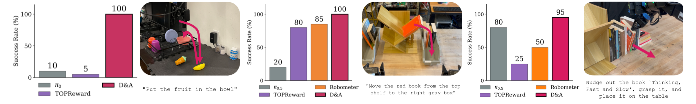

Visual Nuances and Failure Explanations
D&A describes what happened, pinpoints the failure, and says what to do instead.
Method Overview

1Problem
Existing zero-shot VLM approaches (GVL, TOPReward) suffer from
confirmation bias and hallucinated progress in failed runs when
estimating rewards.
Post-trained alternatives (Robometer, RoboReward,
SOLE-R1) require expensive real-world data.
2Method
To address this, D&A decouples progress estimation into a Describe and Assess stage, first describing what happened in the video before assessing progress with respect to a success criterion.
D&A Enables Real-World Reinforcement Learning
D&A rewards improve both online and offline real-world RL.

Online RL Evaluation (DSRL)
“put the fruit in the bowl”DROID Franka
Online RL Training (DSRL)
“put the fruit in the bowl”DROID Franka
Offline RL Evaluation (RECAP)
“move the red book from the top shelf to the gray box”bimanual YAM
Advantage-Filtered Behavior Cloning
“nudge out the book ‘Thinking, Fast and Slow’, grasp it, and place it on the table”bimanual YAM
Fine-tuning π0.5 on the top 35% of action chunks by D&A advantage filters out suboptimal behavior. On success, D&A completes the task faster than the baseline: 565 ± 56 versus 856 ± 277 timesteps.
D&A Rich Feedback Improves Code-as-Policies
Baseline — Code + Binary Success
+ D&A Feedback
More Results
Benchmarks, confusion matrices, scaling laws, and frontier models.
Generalization Across Tasks, Embodiments, and Benchmarks
Scaling up the base VLM, D&A* (GPT-6 Astra) tops every benchmark.
Confusion Matrices
D&A achieves clear separation indicated by a clean diagonal while GVL and TOPReward largely fail to distinguish the pairs.


D&A Scaling Laws
Drag a box on the plot to zoom · hover a point for details · click a chip to hide or show a model family Tap a point for details · tap a chip to hide or show a model family
View underlying data
| Model | Family | Cost ($ / 1M output tok) | Kendall τα (final step) |
|---|
D&A Scales to Frontier Models
D&A improves on D&A-Bench for every frontier model we tested, and on RBM-EVAL-OOD for two of three.
RBM-EVAL-OOD
Kendall τα · higher is better ↑
* suspected to train on RBM-EVAL-OOD
D&A-Bench
Kendall τα · higher is better ↑
Kendall τα with the same VLM prompted naively (teal) versus with D&A (pink), for Qwen 3.6 Plus, GPT-6 Astra and Gemini 4 Argon. The number on the right of each row is the change from Naive to D&A. Gemini 4 Argon is the one case where D&A is slightly lower (−0.010 on RBM-EVAL-OOD*).
BibTeX
@misc{memmel2026dna,
title={D\&A: Decoupling Description and Assessment Enables VLMs as Zero-Shot Robotic Reward Models},
author={Memmel, Marius and Yin, Shawn and Rutia, Urvi and Wadhwa, Angad and Li, Eldon and Angeloff, Gavin and Zhang, Jesse and Goyal, Ankit and Fox, Dieter and Ramos, Fabio and Li, Anqi and Gupta, Abhishek},
year={2026},
note={Preprint}
}